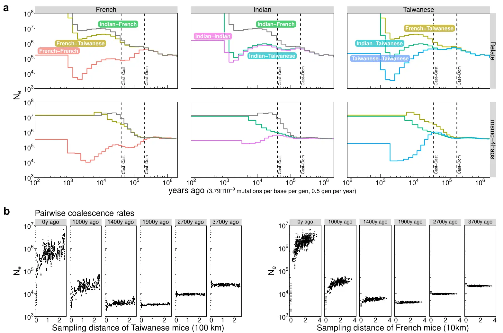

Ancestral recombination graph inference
Inferring tree sequences for population genomics
The coalescent with recombination
No recombination

With recombination
To the left, an ARG without recombination. To the right, recombination splits lineage 1 going backwards in time, where L_1 takes the left path, and R_1 the right. Consequently, L_1 and R_1 have different MRCAs!
msprime stores data as succinct tree sequences

Tree sequences compress data and speedup analyses
- Compact storage (“domain specific compression”)
- Fast, efficient analysis (a “succinct” structure)
- Well tested, open source (active dev community)
Data compression

- Built-in functionality (well documented: http://tskit.dev)
…but limited support for major genomic rearrangements (e.g. inversions, large indels): genomes should be (reasonably) aligned => current primary focus = population genetics
Speed

Tree sequence inference methods
tsinfer/tsdate relate ARGweaver SINGER ARGNeedle Threads
Analysis of tree sequences with 
Adapted from slide by Yun Deng.
Relate


- fast, but limited sample sizes (1000s?)
- good support for ancient DNA

tsinfer - tree sequence inference
- fast
- scales! (millions of samples!)
- introduces tree sequence format
- only genealogies, no branch lengths (but see tsdate (Wohns et al., 2022)

{kind=link}
{kind=link}
{kind=link}
{kind=link}
{kind=link}
{kind=link}
{kind=link}
Bibliography
Baumdicker, F., Bisschop, G., Goldstein, D., Gower, G., Ragsdale, A. P., Tsambos, G., Zhu, S., Eldon, B., Ellerman, E. C., Galloway, J. G., Gladstein, A. L., Gorjanc, G., Guo, B., Jeffery, B., Kretzschumar, W. W., Lohse, K., Matschiner, M., Nelson, D., Pope, N. S., … Kelleher, J. (2022). Efficient ancestry and mutation simulation with msprime 1.0. Genetics, 220(3), iyab229. https://doi.org/10.1093/genetics/iyab229
Halanych, K. M. (2004). The New View of Animal Phylogeny. Annual Review of Ecology, Evolution, and Systematics, 35(Volume 35, 2004), 229–256. https://doi.org/10.1146/annurev.ecolsys.35.112202.130124
Kelleher, J., Wong, Y., Wohns, A. W., Fadil, C., Albers, P. K., & McVean, G. (2019). Inferring whole-genome histories in large population datasets. Nature Genetics, 51(9), 1330–1338. https://doi.org/10.1038/s41588-019-0483-y
Ralph, P., Thornton, K., & Kelleher, J. (2020). Efficiently Summarizing Relationships in Large Samples: A General Duality Between Statistics of Genealogies and Genomes. Genetics, 215(3), 779–797. https://doi.org/10.1534/genetics.120.303253
Speidel, L. (2019). Genealogy estimation for thousands of samples [{{Http://purl.org/dc/dcmitype/Text}}]. University of Oxford.
Speidel, L., Forest, M., Shi, S., & Myers, S. R. (2019). A method for genome-wide genealogy estimation for thousands of samples. Nature Genetics, 51(9), 1321–1329. https://doi.org/10.1038/s41588-019-0484-x
Wohns, A. W., Wong, Y., Jeffery, B., Akbari, A., Mallick, S., Pinhasi, R., Patterson, N., Reich, D., Kelleher, J., & McVean, G. (2022). A unified genealogy of modern and ancient genomes. Science, 375(6583), eabi8264. https://doi.org/10.1126/science.abi8264
Wong, Y., Ignatieva, A., Koskela, J., Gorjanc, G., Wohns, A. W., & Kelleher, J. (2024). A general and efficient representation of ancestral recombination graphs. Genetics, iyae100. https://doi.org/10.1093/genetics/iyae100